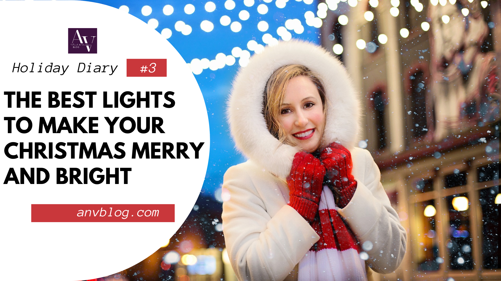
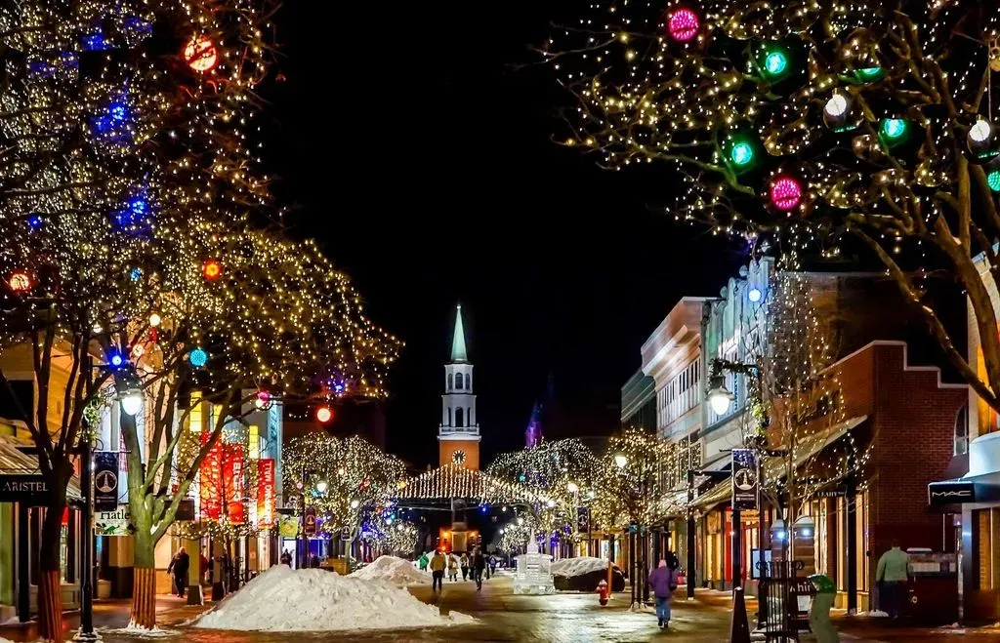
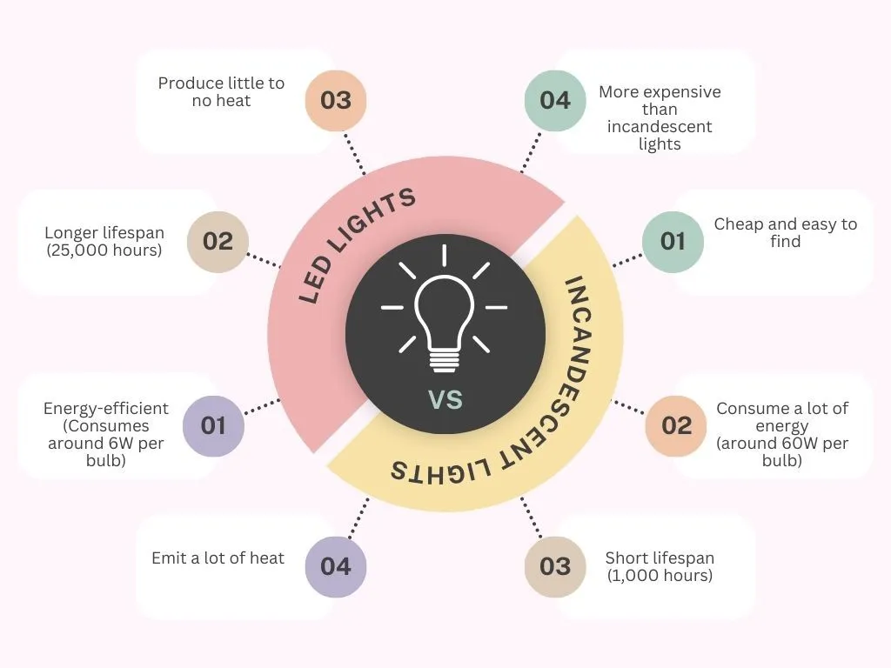

The Best Christmas Lights for 2023: Indoor and Outdoor Options
The festive season is just around the corner, and what better way to bring holiday cheer into your home than with beautiful Christmas lights? Whether you prefer a warm, traditional glow or a colorful and vibrant display, there are plenty of options to choose from.
Get ready to light up your holiday season with the best Christmas lights that will bring a touch of magic to your home. The holiday season is all about creating a warm, festive atmosphere, and what better way to do that than with the perfect illumination? Whether you prefer the traditional twinkle of warm white lights or the vibrant colors of LED strings, we’ve got you covered. In this article, we will guide you through the best lights available this Christmas, ensuring that your holiday decorations are merry and bright.
From traditional light strings to energy-efficient LED options, we will explore the different types of Christmas lights that suit your style and budget. Dive into the world of sparkling icicle lights, dazzling fairy lights, and mesmerizing projector lights to elevate your holiday decor to the next level. Whether you’re aiming for a cozy, nostalgic ambiance or a modern, brilliant display, we have curated a selection of lights that will make your home shine with festive cheer.
Don’t miss out on the opportunity to transform your space into a winter wonderland. Let’s explore the top Christmas lights and illuminate the spirit of the season together.

The importance of Christmas lights
Christmas lights have become an essential part of holiday decorations, and for good reason. They add a magical touch to your home, creating a warm and welcoming atmosphere that instantly puts everyone in a festive mood. Whether you hang them on your Christmas tree, drape them over your mantelpiece, or use them to line your windows and doors, Christmas lights bring a sense of joy and wonder to any space.
Christmas lights are a symbol of the holiday season, representing joy, warmth, and the spirit of celebration. They have the power to transform any space into a magical winter wonderland, creating a sense of awe and wonder for both children and adults alike. The tradition of hanging lights during Christmas dates back to the 17th century when candles were used to light up Christmas trees. Today, we have a wide variety of options to choose from, ranging from traditional lights to energy-efficient LED lights. These lights not only add beauty to our homes but also serve as a beacon of hope and happiness during the dark winter nights.
The right choice of lights can set the mood for the entire holiday season. Whether you want to create a cozy, intimate ambiance or a dazzling, grand display, the type of lights you choose will play a crucial role. From string lights that can be wrapped around trees and bushes to projector lights that cast festive images on your walls, the possibilities are endless. So, let’s dive into the world of Christmas lights and discover the best options to make your holiday season truly magical.

Different types of Christmas lights
When it comes to Christmas lights, there are several types to choose from, each with its own unique charm and appeal. The most traditional Christmas light is incandescent lights like PHILIPS 2 Pack Smooth Mini Christmas Lights, which emit a warm, soft glow that creates a nostalgic and cozy atmosphere. These lights are available in various colors and shapes, allowing you to customize your decorations to suit your style. However, these lights are not as energy-efficient as other options and may require more maintenance.
If you’re looking for a more modern and eco-friendly option, LED lights are the way to go. These lights use less energy, last longer, and are available in a wide range of colors and effects. You can choose from strings of multicolored lights or opt for single-color strands to create a more uniform look. These lights are also safer to use as they don’t generate as much heat as incandescent lights, reducing the risk of fire.
Another popular choice is fairy lights, which are delicate, small bulbs that can be used to create a magical, ethereal effect. These lights are often used to decorate Christmas trees, wreaths, and garlands, adding a touch of enchantment to any space. Fairy lights come in various lengths and colors, allowing you to unleash your creativity and create stunning displays.
For those who want to take their lighting to the next level, there are icicle lights. These lights mimic the look of real icicles hanging from your roof or eaves, creating a dazzling and mesmerizing effect. Icicle lights are perfect for outdoor decorations and can be used to line the edges of your roof or drape along fences and trees. They come in different lengths and colors, making it easy to find the perfect set for your home.
What are the Best Christmas lights for 2023 for Indoor Purpose?
As we enter the joyful season of Christmas this year, the demand for the best indoor lights has reached new heights. Among the various options available, the string lights have emerged as the top choice for many households. String lights, also known as fairy lights, offer versatility and can be easily draped around furniture, staircases, or windows, creating a magical and enchanting ambiance. With a wide range of colors and styles to choose from, these lights add a touch of elegance and warmth to any indoor setting.
Additionally, the holiday lights designed for this year offer advanced features such as adjustable brightness, remote control accessibility, and various lighting patterns, giving homeowners the freedom to customize their display of lights. Whether it is the classic warm white string lights or the vibrant multicolored ones, these lights undoubtedly bring joy and festivity to every household, making this holiday season truly memorable.
Indoor lighting on Christmas is all about creating a cozy, warm ambiance that brings the holiday spirit into your home. Here are some ideas to help you transform your indoor space:
Unlock the Magic: Why LED Christmas Lights are the Best Indoor Christmas Lights of 2023
When it comes to indoor lights, there are some standout options for this year. One of the best choices for creating a magical ambiance is LED lights. These lights come in a variety of colors and can be easily strung around your Christmas tree or used to decorate your walls. They are energy-efficient and long-lasting, ensuring that they will shine brightly throughout the holiday season.
These luminous gems have taken the holiday decorating scene by storm in recent years, captivating hearts with their efficiency, durability, and boundless versatility.
Picture this: LED lights casting a radiant and vibrant glow, all while being remarkably gentle on your energy bills. Yes, you read that right. These lights not only shine brilliantly but also sip energy, setting you on a path to a more cost-effective and eco-friendly holiday season.
But wait, there’s more! These lights are the artists’ palette of the lighting world, offering a smorgasbord of options. Colors, shapes, and sizes galore, giving you endless possibilities to craft your ideal festive ambiance. Whether you lean towards the timeless allure of warm white or crave the vivacious charm of vibrant hues, these lights have something in store for every style.
Here’s the kicker – these luminous marvels come with an extended lifespan. This means they’ll be your trusted companions throughout the entire festive season and even beyond, ensuring that your holiday spirit remains aglow.
In the realm of indoor lighting, LED lights reign supreme, and here’s why: they blend the perfect trifecta of energy efficiency, durability, and versatility. Are you ready to embark on a journey that fuses holiday magic and practicality? Stay tuned as we delve even deeper into the world of indoor lights, with more exciting options and ideas that will light up your festive season.
Elevate Your Décor: The Top-Rated Indoor Lights
In the world of indoor Christmas decorations, there’s one item that takes center stage: a strand of lights. These humble strings hold the power to transform any room into a festive wonderland, creating an atmosphere that’s nothing short of enchanting.
But here’s where the magic truly begins: these top-rated indoor lights come in a smorgasbord of styles and colors. The result? You hold the reins to craft your desired ambiance, tailor-made to your preferences. Whether your heart longs for the classic allure of white lights, evoking timeless elegance, or your spirit dances to the tune of colorful twinkling lights, offering a playful vibe, rest assured there’s an option that’s perfect for your taste.
But there’s more to this story. The top-rated indoor lights have a reputation for being durable and loaded with safety features. You can trust in their reliability, making them a worry-free choice for your holiday décor.
Still not convinced? These lights come in various lengths, giving you the flexibility to adorn your entire room with radiant splendor or focus on specific areas that deserve an extra dose of holiday cheer.
Are you ready to witness your home shine merry and bright this Christmas? Keep reading to discover more about these top-rated indoor lights. We’ve got tips, ideas, and inspiration in store that will elevate your holiday décor to a whole new level of festivity. So, stay tuned and let’s dive deeper into the world of indoor Christmas magic.
Illuminating Your Space: Indoor Light Options - From Christmas String Lights to Multicolor
When it comes to infusing your indoor space with the warm embrace of the holiday season, you’ll find a cornucopia of choices at your fingertips. These options are your secret weapons to craft the perfect festive ambiance, setting the stage for a memorable Christmas.
First in our arsenal are the White Christmas lights. These elegant luminaries are the epitome of indoor decor sophistication. Their soft, warm glow weaves an enchanting tapestry of elegance in any room. You can artfully drape them around your Christmas tree, twirl them along banisters, or let them cascade across windowsills. The result? A touch of pure magic.
But wait, the color spectrum unfolds its charm too. Multicolor Christmas lights step in, infusing your indoor space with a vibrant and playful atmosphere. These dazzling gems come in a variety of hues, and the fun doesn’t stop there – you can set them to twinkle or remain steady. They’re the go-to choice for adding a joyful pop of color to your holiday decor or setting the stage for exuberant moments, especially for children.
Now, if you’re one to revel in the classics, there’s a timeless option waiting for you: traditional lights. Think strings of classic lights with incandescent bulbs, radiating a warm yellow glow that’s like a comforting hug from Christmases past. It’s the kind of nostalgia that adds to the traditional Christmas spirit and evokes cherished memories.
Whether you’re drawn to the elegance of white lights, the playfulness of multicolor lights, or the cozy, timeless appeal of traditional lights, there’s an indoor light option tailored to your unique taste and style. The possibilities are endless, and we’ve only scratched the surface.
Decorate your home with the best smart lights and LED string lights
When it comes to decorating your home with indoor lights, the possibilities are endless. Hang them from your ceiling to create a starry night effect, or use them to accentuate your furniture and artwork. You can even use them to create a dazzling backdrop for your holiday photos. No matter how you choose to decorate, these lights will add a festive and magical touch to your home.
-
Decorate your Christmas tree: Start by wrapping Christmas string lights around your Christmas tree, starting from the base and working your way up. Opt for warm white lights for a classic look or add a pop of color with multicolored strands. Make sure to distribute the lights evenly for a balanced and harmonious effect.
-
Create a magical centerpiece: Use fairy lights to create a magical centerpiece on your dining table or mantelpiece. Fill glass jars or vases with fairy lights and decorative ornaments to add a festive touch to any room.
-
Hang lights on windows: Frame your windows with lights to create a cozy and inviting atmosphere. This will make your home look festive from both the inside and outside.
-
Add lights to garlands and wreaths: Enhance the beauty of your garlands and wreaths by weaving lights through them. This will make them sparkle and shine, adding a touch of elegance to your decorations.
-
Create a DIY light display: Get creative and make your own display of lights using mason jars, wine bottles, or lanterns. Fill them with fairy lights and place them on shelves, mantels, or tables to create a warm and magical glow.
Indoor lights for a festive atmosphere
When it comes to the holiday season, it’s the little things that matter the most. And among those, indoor lights take center stage as the maestros behind the magic. These tiny illuminators have a mighty role to play in setting the scene for a memorable celebration.
Imagine this: a soft and cozy ambiance that wraps your space in warmth. Or perhaps, you’re in the mood for a playful twist, ready to infuse your surroundings with a pop of color. It’s your canvas, and these lights are your brush, allowing you to create the perfect backdrop for your holiday memories.
Whether your style leans towards a minimalist look, exuding subtle elegance, or you’re ready to embrace the grandeur of an extravagant display, indoor lights are the keys to enhancing the festive spirit within your home. But we’re not stopping here – there’s more to explore, more to inspire, and more creative ways to use these lights to bring your holiday vision to life.
We’ve rounded up the best lights for Christmas decoration and as we journey deeper into the world of lights, let’s uncover some of the tips, tricks, and ideas for decorating your outdoor that will illuminate your space and your festive atmosphere. Stay with us as we unravel the secrets to transforming your home into a winter wonderland, one light at a time. Your holiday magic is just beginning, and the path to a truly festive atmosphere is paved with radiant possibilities. So, are you ready to embark on this journey with us? Let’s make this holiday season unforgettable.
Step into the Dazzling World of this Year’s Best Outdoor Christmas Lights
As we usher in a new year and the joyous holiday season draws near, it’s time to illuminate the world with outdoor Christmas lights that take your breath away. What’s in store this year? The answer lies within this section, as we unveil the most brilliant, innovative, and awe-inspiring outdoor lights that will turn your home into a beacon of festive cheer.
From cutting-edge technology to timeless classics, we’ve explored every corner of the market to bring you the ultimate guide to creating an outdoor holiday display that will leave your neighbors in awe. So, let’s delve into this luminous adventure, shall we?
Discover the Illuminating Secrets of this year
In the world of lights for outdoor use, there’s no compromising on durability and weather resistance. They are your trusty companions in creating a breathtaking holiday display. So, what’s on the horizon this year? We’ve scoured the market to unveil the brightest stars in the outdoor lighting galaxy, ensuring your festive season shines brighter than ever.
First up, the undeniable winner: outdoor LED Christmas lights with products like JMEXSUSS 66ft 200 LED Christmas Lights Outdoor. Not only are they energy-efficient, but they also boast a remarkable longevity, standing tall against the outdoor elements that Mother Nature throws their way. But that’s not all. These radiant gems come in a variety of colors and styles, turning your yard into a canvas for a stunning display of lights that’s bound to leave everyone in awe.
But there’s more to explore. Another top-rated choice takes center stage: a splendid set of outdoor mini lights. These petite marvels are tailor-made for adorning trees, fences, and pillars, infusing your outdoor space with a heartwarming festive touch. And this is just the beginning.
Elevate Your Outdoor Décor: The Top-Rated Lights to Use
When it comes to making a statement with your outdoor Christmas decorations, you need something that commands attention and captures the essence of the season. This holiday season, the large, multicolor lights are your go-to choice. These luminous giants are bold, vibrant, and their impact can be felt from a distance, making them the stars of any show-stopping outdoor display. But that’s just the beginning.
Another crowd-pleaser is the timeless classic, outdoor string lights. These versatile marvels bring flexibility to the forefront, allowing you to weave them around trees, adorn bushes, and embrace your porch railings. The result? A warm and welcoming atmosphere that leaves a lasting impression on your neighbors and all who pass by.
Crafting Outdoor Christmas Magic: Ideas to Wow Your Neighborhood
Get ready to transform your outdoor space into a wonderland of holiday cheer and festivity with the art of an outdoor Christmas display. We’re about to take you on a journey through a myriad of ideas that will not only delight your neighbors but also infuse your home with the spirit of the season.
Picture this: the glistening beauty of icicle lights that mirror the look of real icicles. These gems are the key to an enchanting winter wonderland, draping your outdoor space in a captivating, icy glow. And that’s just the beginning.
Consider the charm of net lights as they lovingly drape over bushes and hedges, creating a mesmerizing blanket of light. The result is an outdoor scene that’s straight out of a holiday postcard.
But we’re not stopping there. Imagine the whimsy of silhouette lights, painting a scene that’s right out of a storybook - Santa Claus and his reindeer gliding through the night sky. Your yard can become the stage for a magical performance that enchants all who pass by.
And of course, a touch of elegance is essential. Guide your guests to your front door with the enchanting glow of pathway lights. These luminous beacons not only illuminate the way but also add a dose of welcoming warmth to your holiday décor.
Transform Your Outdoor Space into a Winter Oasis with Lights
Your outdoor space is a canvas waiting to be painted with the enchantment of lights, turning it into a magical winter wonderland. Are you ready to embark on a journey where your patio, deck, and garden come alive with the glow of the season?
Imagine this: your patio or deck bathed in the soft radiance of twinkling lights, creating a cozy and inviting atmosphere perfect for outdoor gatherings. We’re about to unveil the secrets to transforming your outdoor space into a haven for warm winter moments.
But we’re not stopping there. Take a moment to picture lights adorning your pergola or gracefully wrapping around your patio furniture. The result? An enchanting touch that elevates your outdoor space to a whole new level, making it the perfect setting for memorable holiday moments.
And if you’re feeling extra creative, consider using battery-operated lights to weave a tapestry of light through your trees and flower pots, all without the need for electrical outlets. This is the journey you’ve been waiting for, where your outdoor space becomes a canvas for holiday enchantment, and we’ve only scratched the surface.
Elevate Your Holidays with Outdoor Lights: Craft a Stunning Display of Multicolor Christmas
It’s time to transform your outdoor space into a dazzling spectacle with the boundless options of outdoor lights at your disposal. We’re about to unveil the secrets to creating a display that will leave everyone in awe, and it’s easier than you might think.
Picture this: warm white lights are your ticket to crafting a display that’s warm and inviting, wrapping your outdoor space in a soft and cozy glow that feels nothing short of magical. But we’re just getting started.
For those in search of a festive and colorful spectacle, consider multicolor LED lights. These radiant gems are the secret to infusing a playful touch into your outdoor decor, spreading joy to all who pass by. Your outdoor space is your canvas, and we’re here to help you paint it with holiday enchantment.
But hold onto your hats, because we’re about to dive even deeper into the world of outdoor lights, unveiling more creative ideas, tips, and ways to make your display truly shine. Your path to a stunning holiday display is just beginning, and the best is yet to come.
So, are you ready to illuminate your space and make this holiday season one to remember? Keep reading to find out some tips to select the right lights and some latest trends.
How to Choose the Right Christmas Lights: Your Guide to Holiday Brilliance
As the holiday season approaches, it’s time to transform your home into a winter wonderland, and it all begins with the centerpiece of your festive decor - the Christmas tree. The right Christmas tree lights can make your tree truly shine and set the stage for a season of warmth, joy, and enchantment.
In this comprehensive guide, we’ll walk you through everything you need to know to make your tree a radiant spectacle this year. From the latest trends in Christmas tree lights to essential factors to consider when choosing the perfect illumination, we’ve got you covered.
So, get ready to embark on a journey where your tree will become a beacon of holiday magic, and the memories created around it will be nothing short of enchanting. Whether you’re an experienced decorator or new to the art of lighting up your tree, there’s something for everyone in this illuminating adventure. Are you ready to make your tree the star of the show this holiday season? Keep reading, and let’s light up your world together.
Light Up Your Tree and Your Holidays: The Best Christmas Tree Lights
Choosing the perfect Christmas tree lights is a joyful task that involves a few key considerations. It’s your opportunity to set the stage for a radiant holiday season, and the options for this year are bound to leave you in awe.
In the spotlight are the dazzling LED lights like BEEWIN 200 Christmas Icicle Lights, an optimal choice for their unbeatable combination of energy-efficiency and remarkable longevity. These lights not only brighten your tree but also your spirits, with a kaleidoscope of colors and styles to choose from, ensuring your tree is a true reflection of your holiday dreams.
But there’s another star in this show - the beloved incandescent lights. They emit a warm and traditional glow that’s cherished by many, invoking a sense of nostalgia and the timeless charm of the holiday season.
Lighting Up Your Decision: Factors to Consider When Choosing Christmas Tree Lights
Selecting the right Christmas tree lights is a delightful journey, and it all begins with some key considerations. These factors will pave the way for a tree that’s nothing short of magical, and we’re here to guide you through the process.
First, let’s talk about the size of your tree. The size plays a pivotal role in determining the number of lights you’ll need for that full and even glow. As a general rule, it’s recommended to use at least 100 lights per vertical foot for larger trees, ensuring your tree stands out with radiance. But what if you have a smaller tree? In that case, you might opt for a strand with a lower bulb count. It’s all about finding that perfect balance.
Now, here’s where the fun begins - your preferences. Do you have a specific color or style in mind? The choices are as endless as your holiday dreams. The lights you choose will add that unique touch to your tree, reflecting your individual taste and style. But there’s more to consider.
When it comes to the play of lights, think about whether you want them to have a steady glow, casting a warm and unwavering radiance, or if you prefer a touch of twinkle or flash to infuse that extra festive spirit. Your tree is your canvas, and these choices are the strokes that make it a masterpiece.
Guiding Your Quest for the Perfect Christmas Tree Lights
Navigating the vast sea of Christmas tree lights can indeed be overwhelming, but fret not, for we’ve got the compass that will lead you to your holiday treasure. Finding the lights that will make your tree shimmer like a star is a journey, and we’re here to offer you some precious tips to make it an unforgettable one.
First, let’s set our sights on the foundation. It all begins with measuring the height and width of your tree before you embark on the quest for lights. This simple step ensures you have enough luminous gems to cover every branch and corner. It’s the first stroke of brilliance in creating your holiday masterpiece.
But what’s the use of treasure if it’s not in working order? It’s always a wise idea to test the lights before adorning your tree. This little act of prudence will save you from any surprises and make sure your tree shines brightly with no hiccups.
Now, let’s talk about adding that personal touch. Consider the color scheme and theme of your holiday decor. Are you leaning towards the classic elegance that clear or warm white lights can provide? Or perhaps you’re in the mood for a more festive look, and multicolor or themed lights are calling your name. The choice is yours, and it’s the brushstroke that brings your holiday vision to life.
LED vs. Incandescent Christmas Tree Lights: Which One’s Your Sparkling Companion?
In the realm of Christmas tree lights, two titans stand before you, and the choice is yours to make. Will it be the energy-efficient and durable LED lights, or the warm and traditional glow of the incandescent lights that capture your heart? Let’s dive into this electrifying face-off.
The champions of energy efficiency and longevity, LED lights, are here to light up your world. They boast a longer lifespan and offer a safe haven as they produce little to no heat. You can decorate your tree without any worry. Their radiant embrace keeps the holiday spirit alive, but the battle is far from over.
On the other side of the ring, we have the ever-beloved incandescent lights. They envelop your tree in a warm and traditional glow, invoking nostalgia and the timeless charm of the holiday season. With an array of colors and styles, these lights are often more budget-friendly than their LED counterparts. But how do you choose?
To make this critical decision, consider your priorities. Do you yearn for energy efficiency and the promise of longevity, or does the allure of that warm and traditional glow and affordability pull at your heartstrings? The battlefield is set, and the choice is yours.

Elevate Your Tree to New Heights: The Art of Enhancing Your Christmas Tree with Lights
Your Christmas tree isn’t just a decoration; it’s the heart of your holiday season, and the right lights can make it shine even brighter. We’re about to embark on a journey that will transform your tree into a mesmerizing masterpiece.
Picture this: your tree adorned with a plethora of colorful ornaments, each one with a story and significance. To let them truly shine, opt for the enchanting embrace of clear or warm white lights. These gentle luminous companions will allow your ornaments to take center stage in the holiday spotlight.
But there’s more to explore. If you’re aiming for a more monochromatic or themed tree, consider lights that are in harmony with your color scheme. It’s the brushstroke that brings your tree’s theme to life, creating a tapestry of elegance that’s bound to impress.
And last but not least, the secret to a perfect display is evenly distributing the lights throughout your tree. Start from the trunk and work your way to the branches, ensuring a balanced and radiant display. Your tree is your canvas, and the lights are the paint that will make it a masterpiece.
The journey continues as we dive deeper into the world of lights, unveiling the latest trends and creative ways to make your tree truly shine.
What are the latest trends in Christmas lights for 2023?
Christmas light trends to try
Each year, new trends emerge in the world of lights, and 2023 is no exception. One popular trend for this year is smart lights like Twinkly Strings. These lights can be controlled remotely using a smartphone or smart home device, allowing you to easily change colors and patterns. Another trend is T5 smooth LED Christmas lights. These lights have a sleek and modern look and are perfect for contemporary and minimalist decor styles.
Innovative and stylish lights
For those looking for innovative and stylish lights, there are plenty of options this year. One trend to try is lights that can be customized with different colors and effects. These lights allow you to create a unique and personalized display of lights that will impress your guests. Another stylish option is lights with decorative elements, such as snowflakes or stars. These lights add an extra touch of charm and elegance to your holiday decor.
Stay updated with the latest light designs
If you want to stay up-to-date with the latest light designs, it’s a good idea to follow industry experts and trendsetters. Many lighting manufacturers and home decor websites release annual trend reports that highlight the latest designs and styles. You can also visit local holiday shows and festivals to see firsthand the newest light innovations. Don’t be afraid to get creative and experiment with different light designs to make your holiday decor unique and eye-catching.
Unique ways to incorporate lights into your decor
Lights can be used in various creative ways to enhance your holiday decor. One unique idea is to use them as a centerpiece for your dining table. Fill a glass vase with string lights and place it in the center of the table for a magical and enchanting display. You can also create a light curtain by hanging string lights vertically from a curtain rod or tension wire. This creates a stunning backdrop for your holiday parties or photo backdrops.
Explore the newest Christmas light technologies
Technology is constantly evolving, and lights are no exception. Explore the newest light technologies, such as solar-powered lights. These lights harness the power of the sun during the day and automatically illuminate your outdoor space at night. Another innovative option is projection lights that create moving patterns and designs on your home or yard. These lights add a dynamic and mesmerizing element to your holiday decor. Stay curious and be open to trying out new technologies to enhance your display of lights.
How to create a mesmerizing Christmas light display?
Tips for designing a spectacular Christmas light display
Designing a mesmerizing display of Christmas lights requires some planning and creativity. First, determine the theme or concept you want to showcase. This could be anything from a winter wonderland to a Santa’s workshop theme. Next, create a rough sketch or layout of your display, taking into consideration the size and shape of your space. Make sure to measure the area to ensure you have enough lights to cover it. Finally, start by installing the lights in key areas, such as the roofline and trees, and then work your way to the smaller details.
Step-by-step guide to setting up lights in outdoor
Setting up lights in outdoor can be a daunting task, but with a step-by-step approach, it becomes much more manageable. Start by untangling the lights and checking that all bulbs are working properly. Next, decide on the areas you want to highlight and plan your light placement accordingly. Begin at the power source and work your way outward, using clips or hooks to secure the lights. Be sure to follow safety guidelines and use extension cords and timers as needed. Finally, step back and admire your masterpiece. Don’t forget to turn on the lights and enjoy the magical ambiance you have created.
Here are some ideas to inspire you:
-
Wrap trees and bushes: Use string lights to wrap around the trunks of your trees and the branches of your bushes. This will create a stunning, sparkling effect and make your garden come alive with holiday cheer.
-
Illuminate pathways with Eyrosa Solar Outdoor Lights: Line your pathways with stake lights or solar-powered lanterns to create a warm and inviting entrance for your guests. This not only adds a decorative touch but also ensures safety during the dark winter nights.
-
Highlight architectural features: Use spotlights or projector lights to highlight the architectural features of your home, such as columns, arches, or windows. This will add depth and dimension to your outdoor decorations.
-
Hang lights on fences or railings: String lights can be hung along fences or railings to create a whimsical and festive look. You can also use fairy lights to create a cascading effect along your fence or wrap them around your porch railing.
-
Create a focal point: Choose a centerpiece for your outdoor decorations, such as a giant inflatable Santa Claus or a beautifully decorated Christmas tree. Surround it with lights to make it the focal point of your display.
Create an enchanting atmosphere with Christmas light displays
Creating an enchanting atmosphere with Christmas light displays is all about capturing the magic of the season. Use lights to accentuate architectural features, such as pillars or archways, and create a focal point in your outdoor space. Consider adding other elements, such as garlands, ribbons, or even a lighted reindeer, to enhance the overall effect. Don’t forget to incorporate different colors and styles of lights to add depth and dimension to your display. With the right combination of lights and decorations, you can create a truly enchanting atmosphere that will leave your guests in awe.
Conclusion
Christmas lights are an essential part of the holiday season, bringing warmth, joy, and a touch of magic to our homes. From classic incandescent lights to energy-efficient LEDs, there are options available to suit every style and budget. Whether you prefer a traditional, cozy ambiance or a modern, dazzling display, the right choice of Christmas lights can transform your space into a winter wonderland.
When it comes to outdoor lighting, consider wrapping trees and bushes, illuminating pathways, and highlighting architectural features. Indoors, decorate your Christmas tree, create magical centerpieces, and add lights to garlands and wreaths. Remember to prioritize safety by checking for damaged lights, avoiding overloading electrical circuits, and keeping lights away from flammable materials.
LED lights are the most energy-efficient option, while solar-powered lights are perfect for outdoor decorations. Consider your budget and personal preferences when choosing the best Christmas lights for your home. You can find a wide selection of lights at home improvement stores, online retailers, specialty stores, and local Christmas markets.
If you’re feeling creative, try some DIY Christmas lighting projects using mason jars, wine bottles, branches, or snowflakes. These projects will add a personal touch to your decorations and allow you to showcase your creativity.
Illuminate the spirit of Christmas this holiday season with the best lights that will make your home merry and bright. Let the magic of Christmas lights create memories that will last a lifetime.
Disclaimer:
This post contains links that will redirect you to the products page. I get commissions for purchases made through links in this post. As an Amazon Associate, I earn from qualifying purchases.
FAQs
Yes, clear Christmas string lights are still popular among homeowners. They offer a classic and timeless look, suitable for both indoor and outdoor decorations. Clear Christmas string lights can be used on Christmas trees, along staircases, or to accent any area you wish to highlight.
Yes, there are color-changing Christmas lights available on the market. These lights can cycle through different colors or be programmed to display a specific color. Color-changing Christmas lights add a vibrant and dynamic touch to your holiday decorations.
Yes, there are a lot of outdoor LED Christmas tree lights available. These lights are specifically designed to withstand outdoor conditions and can be used to decorate your trees, bushes, or outdoor structures. They are weatherproof and provide a beautiful illumination for your outdoor Christmas display.
Yes, LED Christmas string lights are commonly available for indoor decorations. They come in various lengths, colors, and effects, allowing you to create a festive atmosphere in your home. LED Christmas string lights are easy to install and can be used for Christmas trees, garlands, or any other decorative element.
Yes, warm white Christmas lights are widely available. These lights emit a soft, warm glow, creating a cozy and inviting atmosphere. Warm white Christmas lights are perfect for indoor decorations, mantels, or to add a warm touch to your outdoor display.
Smart Christmas lights are lights that can be connected to a smart home system or controlled via smartphone apps. These lights offer various features, such as customizable color settings, remote control, and the ability to synchronize with music. Smart Christmas lights allow you to create stunning and personalized lighting displays.
LED Christmas tree lights are energy-efficient, long-lasting, and produce vibrant colors. They are also safer to use as they do not generate heat like incandescent lights. LED Christmas tree lights come in a variety of sizes and styles, making them a popular choice among homeowners.
The best Christmas lights for indoor use in 2023 include a wide range of options, such as clear Christmas lights, LED Christmas tree lights, mini Christmas lights, multicolor Christmas string lights, warm white Christmas lights, and smart Christmas lights. These lights are easy to install, durable, and provide a beautiful illumination for your indoor Christmas decorations.
The best options for indoor Christmas lights in 2023 include clear Christmas lights, white Christmas lights, LED Christmas tree lights, multicolor Christmas lights, mini lights, fairy lights, mini Christmas lights, and more. These options are available in different styles and bulb types to suit your preferences.
You can find clear Christmas lights for indoor use at various stores and online retailers. Some popular options include Kringle Traditions, Twinkly Lights, and others. Make sure to check the specifications and customer reviews to find the best clear Christmas lights that meet your requirements.
</div>